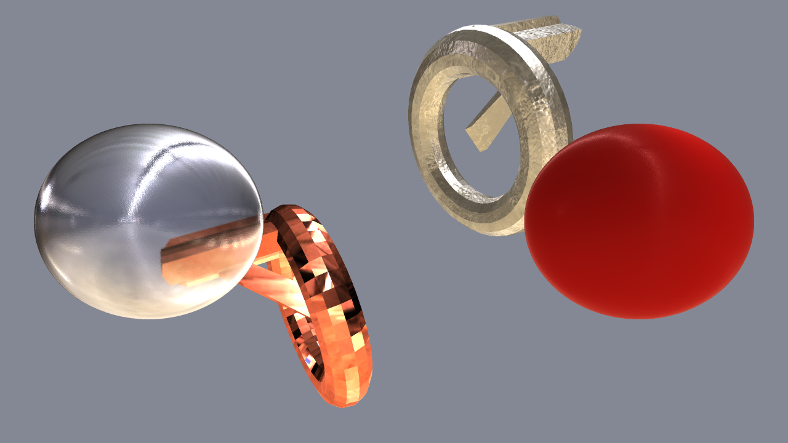

Qt Quick 3D - Custom Materials Example
Demonstrates the use of some Material Library materials.

This example demonstrates using four different Material Library custom materials in an application.
Setting the Scene Environment
We want to use a light probe, as we're going to use some reflective materials. We need to enable light probe and adjust its settings to get the result we want.
environment: SceneEnvironment { clearColor: "#848895" backgroundMode: SceneEnvironment.Color probeBrightness: 1000 lightProbe: Texture { source: "maps/OpenfootageNET_garage-1024.hdr" } antialiasingMode: SceneEnvironment.SSAA antialiasingQuality: SceneEnvironment.VeryHigh }
Material Library Custom Materials
Bumpy Aluminum
We're applying AluminumMaterial for the WeirdShape model we have created in WeirdShape.qml. We'll adjust its bumpiness to make it look battered or cast, instead of smooth and polished.
WeirdShape { customMaterial: AluminumMaterial { bump_amount: 5.0 } position: Qt.vector3d(150, 150, -100) }
Copper
Next we apply unmodified CopperMaterial for another WeirdShape.
WeirdShape { customMaterial: CopperMaterial {} position: Qt.vector3d(-150, -150, -100) }
Frosted Glass
We'll apply FrostedGlassSinglePassMaterial for one of the spheres, and adjust its roughness, reflectivity, index of refraction, and color a little bit.
Model { position: Qt.vector3d(-300, 0, 100) scale: Qt.vector3d(2.5, 2.5, 2.5) source: "#Sphere" materials: [ FrostedGlassSinglePassMaterial { roughness: 0.1 reflectivity_amount: 0.9 glass_ior: 1.9 glass_color: Qt.vector3d(0.85, 0.85, 0.9) } ] }
Plastic
For the other sphere we'll apply PlasticStructuredRedMaterial, and adjust its index of refraction and bumpiness a bit.
Model { position: Qt.vector3d(300, 0, 100) scale: Qt.vector3d(2.5, 2.5, 2.5) source: "#Sphere" materials: [ PlasticStructuredRedMaterial { material_ior: 1.55 bump_factor: 0.1 } ] }
Files: